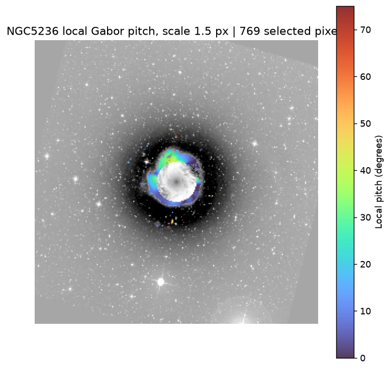
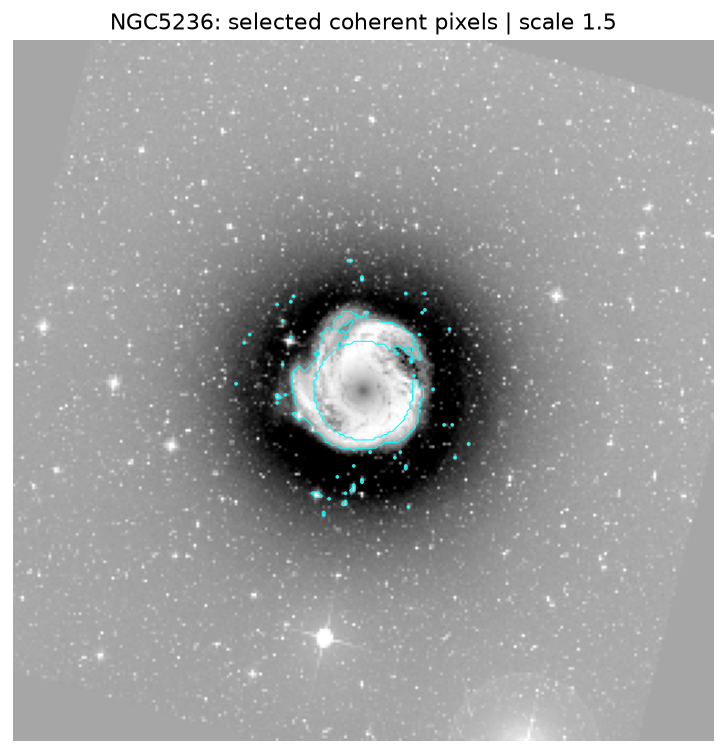
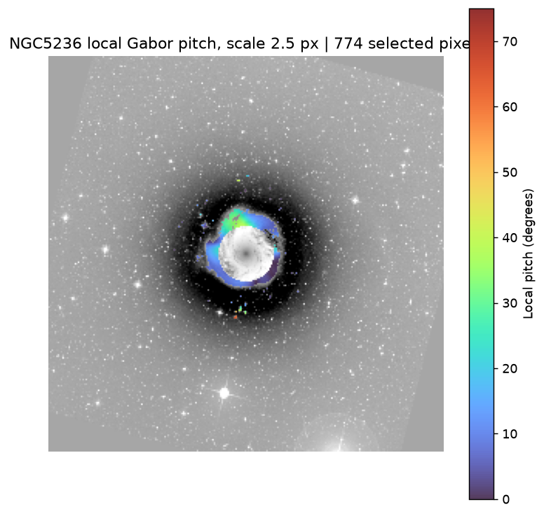
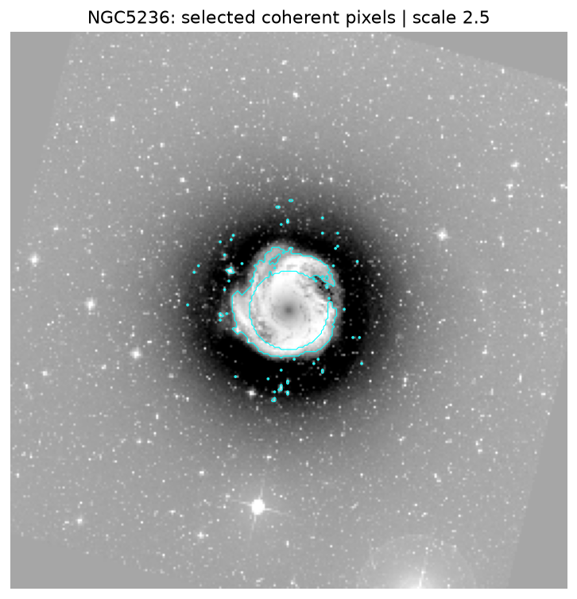
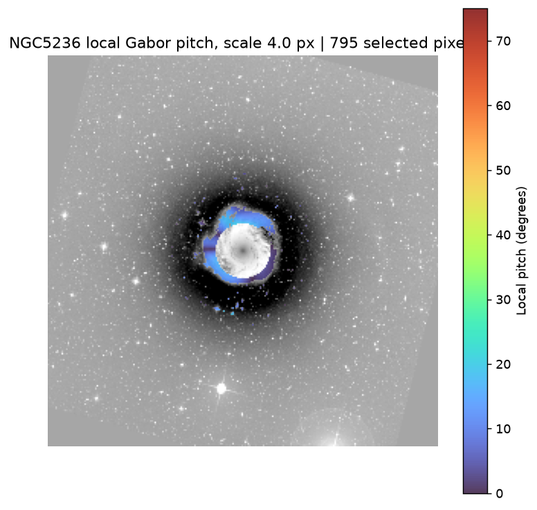
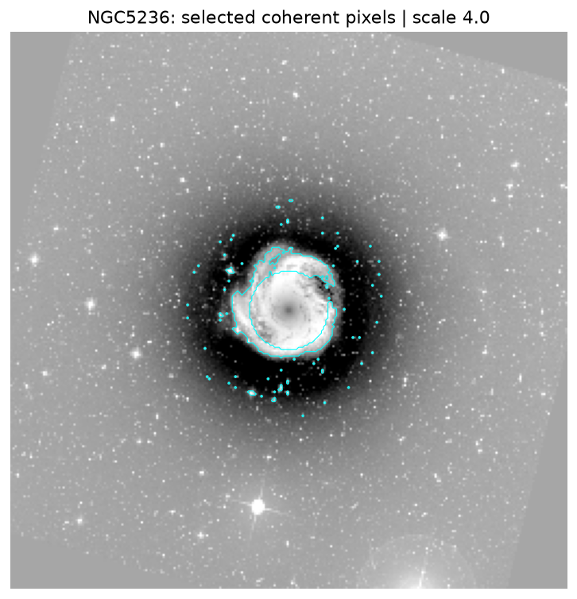

Important: These local orientations are dominated by the inner ring. They are not validated pitches of the outer physical spiral arms. No previous arm fits or reconstructions have been replaced.






Pitch is computed relative to the local azimuthal direction in the AutoProf-deprojected plane, using structure-tensor tangent orientation from the enhanced residual. Selected pixels require coherence, positive original residual, and a restricted radial range. The inner-ring dominance shows that these cuts are not sufficient to isolate physical arms. Next validation: exclude the central ring, verify external arm support, and compare independent source bands and PSF effects.
Numerical results